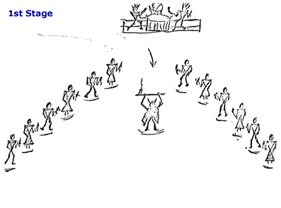

Now emerges the Moon for building when energy is profuse,
as symbolised by the beaver who builds his winter home. The relation of
Mother-Earth, Beaver-Moon and Sun-Father control life on this planet,
and give us our different seasons; so too, the Medicine men supposed outlined
a mans future and phases of life. As the celestial bodies change in their
routine; so too, there exudes an emergence of new life. Exhibitions are
held for the newly created and changes, and there is glee on all the planets,
and prayers are offered in gratitude to the creator, ruling as the Great-Mystery.
Dance Steps

See the individual dance steps: